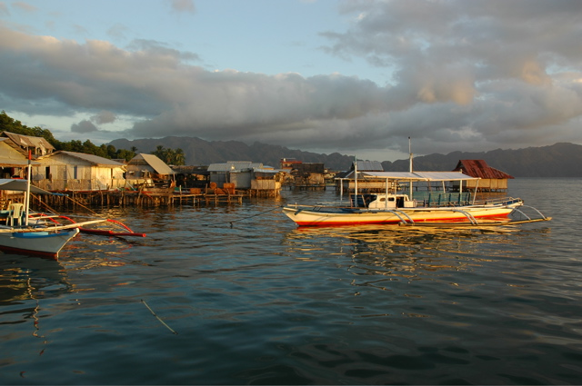
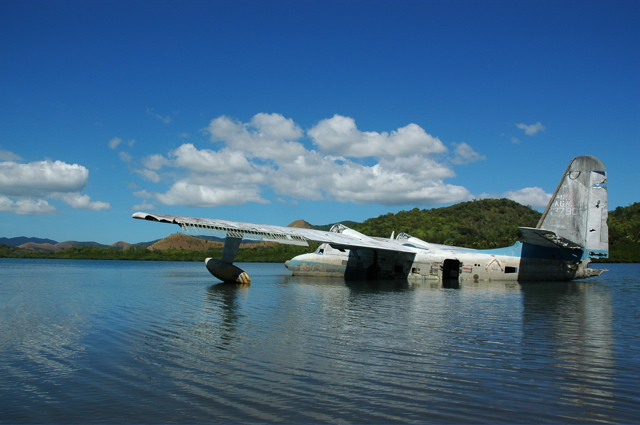
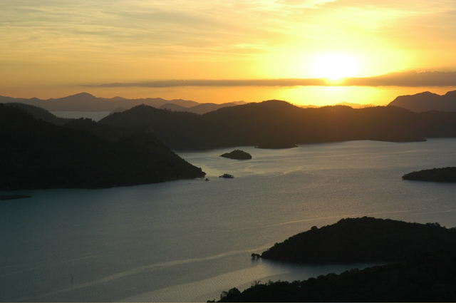

Nach einem weiteren Reisetag mit Jeepney, Flugzeug, Tricycle und am Schluss noch einem Bötchen sind wir endlich in Coron angekommen. Unsere Unterkunft liegt auf einer winzigen Insel vor der eigentlichen Stadt in einer malerischen Bucht. Mit einem Kayak kann man hier die umliegenden Mangroven-Wälder erkunden.
 
Die größte Festland-Attraktion ist ein Hügel hinter dem Ort, auf den eine endlose Treppe führt, und den ein hässliches großes Kreuz schmückt. Von dort aus hatten wir bei Sonnenuntergang einen tollen Blick über die Bucht mit ihren vielen kleinen Inselchen.
Ab Morgen werden wir uns wieder den Unterwasser-Attraktionen widmen. Das sind hier vor allem Wracks.
PS von Ali: Vielen Dank für Eure Anteilnahme am Älterwerden! Über Eure Glückwünsche und Nachrichten habe ich mich sehr gefreut.